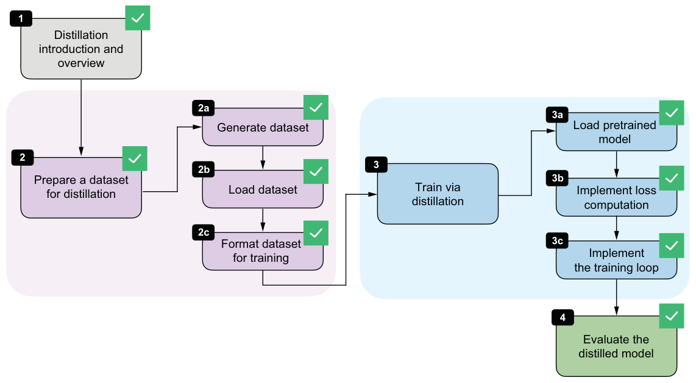

In general, we do not expect the smaller student to match the teacher exactly. For instance, Qwen3 235B-A22B has a MATH-500 accuracy of 92.4%, and DeepSeek-R1 has a MATH-500 accuracy of 91.2%. Still, we can recover a useful portion of the teacher’s reasoning behavior in a much cheaper model. Our distilled model accuracy could also be higher if we used a larger model (e.g., a 4- or 30-billion-parameter version of Qwen3 instead of Qwen3 0.6B), but this would increase the computational cost during training.
Let’s step back and connect the individual pieces we implemented into one complete workflow. Figure 8.18 summarizes the full distillation pipeline, starting with the introductory setup, followed by dataset generation and preprocessing, then the distillation training loop itself, and finally the evaluation of the distilled model on MATH-500.
This workflow completes the core technical recipe for distilling a smaller reasoning model from a stronger teacher. In practice, each stage offers room for variation, such as changing how the teacher data is generated and modifying the training settings.
Exercise 8.2: Distilling without <think> tokens
--use_think_tokens and compare the results against the version trained with reasoning traces wrapped in <think>... </think>. Inspect the validation loss and, if possible, evaluate the saved checkpoint on MATH-500. Then compare the results with those listed in table 8.1. How much do the explicit reasoning tags matter in this setup?
8.9Future directions for reasoning models
Before closing the chapter, let’s discuss where reasoning models are headed next.
For the foreseeable future, the broad pattern remains the same. For instance, the general strategy is to develop a stronger reasoning teacher, collect high-quality reasoning traces, and distill them into smaller student models.
One obvious direction is the continued refinement of the training recipe popularized by the DeepSeek-R1 paper, which includes both RLVR (chapters 6 and 7) for the flagship models and distillation for the smaller models focused on computational efficiency.
A second direction is optimization at inference time. In practice, a reasoning model should not always produce answers of equal length. Some tasks benefit from short, direct responses, whereas others benefit from more detailed, multistep reasoning. This creates room for more automatic and flexible inference scaling at the application layer, where the surrounding system decides when to ask for a short answer, when to allocate more reasoning budget, and when to stop early. For example, OpenAI implemented such a system with the launch of GPT-5 in 2025, adding an “auto” mode to steer the reasoning effort and the reasoning trace generation length.
A third direction for improvement is reward generation for RLVR. Much of the current work still relies heavily on rewards based on final answers, especially in math and code. But process rewards that check intermediate reasoning steps, not just the final result, may provide a richer training signal and help models learn more reliable reasoning strategies. For example, the DeepSeek-Math-V2 paper (https://arxiv.org/abs/2511.22570) recently demonstrated that judging the whole answer during training can meaningfully improve reasoning performance.
A fourth direction is the growing role of reasoning models as the engine inside larger agent applications such as OpenAI Codex, Claude Code, and OpenClaw. In these settings, the model must not only solve a simple math or coding problem, but also plan, call tools, recover from failures, and coordinate longer workflows. This naturally pushes reward design beyond math and code correctness. We may want rewards for successful tool use, information retrieval, policy compliance, and more. In turn, this leads to multi-reward training, where several objectives are optimized together instead of relying on a single correctness score.
Distillation will likely remain important in this setting because it offers a practical way to transfer these richer behaviors from larger and more expensive teacher systems into smaller models that are easier to deploy, may run locally, and are more cost effective for users.